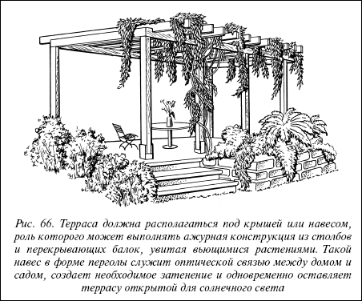
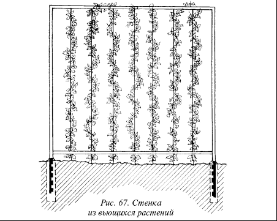

Террасы.

Поверхность террасы должна иметь наклон в 1–2° в направлении от дома, чтобы вода не текла к стене здания.
Покрытие террасы обычно делают из плиток, кирпича, природного камня, которые укладывают так же, как при строительстве дорожек, на хорошо утрамбованную основу, верхним слоем которой является слой песка толщиной 5 см. Это необходимо, чтобы приподнятые в результате воздействия мороза плитки могли опуститься при изменении температуры на прежнее место и избежать деформации. Материал для мощения террасы кладут на цементный раствор и подгоняют так, чтобы щели между отдельными фрагментами были минимальными, иначе в них будут проваливаться ножки садовой мебели. При устройстве покрытия небольшие участки открытого грунта можно выделить под низкорослые, красиво цветущие кустарники или группы цветов. Боковым сторонам террасы можно придать форму подпорных или цветочных стенок, зеленых или цветочных откосов, широкой террасной лестницы, выложенной каменными или бетонными плитами, в щелях которых посадить низкие скальные растения или траву.
Совет
Одним из самых красивых способов ограждения террасы является сооружение деревянных или металлических конструкций, служащих опорой для вьющихся растений. Оплетая эти конструкции, растения создадут легкую проницаемую ширму. Особенно декоративны вьющиеся цветущие растения.

Рис. 66. Терраса должна располагаться под крышей или навесом, роль которого может выполнять ажурная конструкция из столбов и перекрывающих балок, увитая вьющимися растениями. Такой навес в форме перголы служит оптической связью между домом и садом, создает необходимое затенение и одновременно оставляет террасу открытой для солнечного света
Высота террасы в зависимости от рельефа участка может быть от нескольких сантиметров до полутора метров. Идеальным при размещении террасы является положение ее пола на одном уровне с поверхностью сада, например с окружающим газоном. Если же дом расположен выше уровня сада, рекомендуется насыпать дополнительный грунт, чтобы расширить террасу. Вокруг дома для террасы должна быть организована большая ровная плоскость. Для этого предназначенная под террасу часть поверхности сада должна быть поднята до уровня жилого помещения. Перепады в уровнях почвы оформляются различными подпорными стенками, которые поддерживают грунт. Если терраса получается высокой (выше 1 м), под ней можно оставить свободное пространство для хранения садового инструмента и других вещей. Свод таких террас покрывают изолирующим слоем, предотвращающим протекание воды.
Внимание
Терраса, расположенная на одном уровне с домом, обеспечивает наилучшую зрительную связь с пространством сада.
Строят террасы, как правило, с южной стороны, если есть желание ее затенить, можно построить перголу и посадить вьющиеся растения. Необходимо постараться спланировать композицию сада так, чтобы с террасы открывалась наиболее живописная часть сада.

Рис. 67. Стенка из вьющихся растений